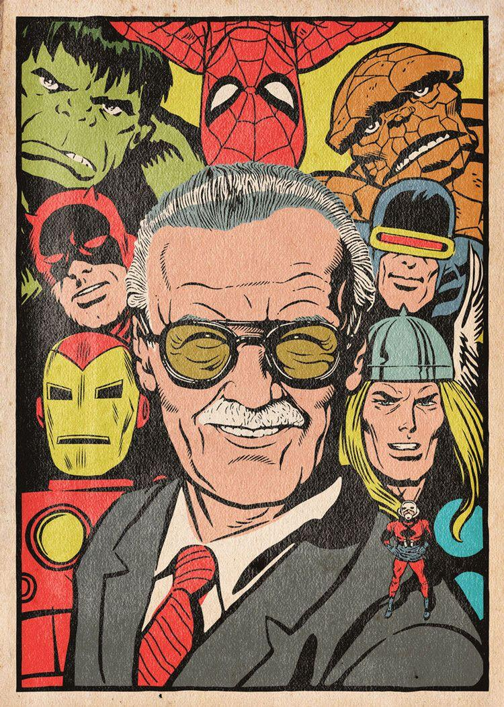

The Creater Of Multiverse
Stan lee
The man who make childhood Amazing

Stan lee With his characters
Here's a time-line of Stan lee's life:
- 1922 - tanley Martin Lieber was born on December 28, 1922, in Manhattan, New York City, in the apartment of his Romanian-born Jewish immigrant parents, Celia (née Solomon) and Jack Lieber, at the corner of West 98th Street and West End Avenue in Manhattan.
- 1930 - Stan said that in his youth he worked such part-time jobs as writing obituaries for a news service and press releases for the National Tuberculosis Center; delivering sandwiches for the Jack May pharmacy to offices in Rockefeller Center; working as an office boy for a trouser manufacturer; ushering at the Rivoli Theater on Broadway, and selling subscriptions to the New York Herald Tribune newspaper.
- 1937 - At fifteen, Lee entered a high school essay competition sponsored by the New York Herald Tribune, called "The Biggest News of the Week Contest." Lee claimed to have won the prize for three straight weeks, goading the newspaper to write him and ask him to let someone else win. The paper suggested he look into writing professionally, which Lee claimed "probably changed my life."
- 1939 - Stan graduated from high school early, aged sixteen and a half, in 1939 and joined the WPA Federal Theatre Project.With the help of his uncle Robbie Solomon, Lee became an assistant in 1939 at the new Timely Comics division of pulp magazine and comic-book publisher Martin Goodman's company. Timely, by the 1960s, would evolve into Marvel Comics.
- 1941 - Marshaling his childhood ambition to be a writer, young Stanley Lieber made his comic-book debut with the text filler "Captain America Foils the Traitor's Revenge" in Captain America Comics #3 (cover-dated May 1941), using the pseudonym Stan Lee which years later he would adopt as his legal name.
- 1941 - Stan graduated from writing filler to actual comics with a backup feature, "'Headline' Hunter, Foreign Correspondent", two issues later. Lee's first superhero co-creation was the Destroyer, in Mystic Comics #6 (August 1941). Other characters he co-created during this period fans and historians call the Golden Age of Comic Books to include Jack Frost, debuting in the U.S.A. Comics #1 (August 1941), and Father Time, debuting in Captain America Comics #6 (August 1941)
- 1942 - Lee entered the United States Army in early 1942 and served within the US as a member of the Signal Corps, repairing telegraph poles and other communications equipment. He was later transferred to the Training Film Division, where he worked writing manuals, training films, slogans, and occasionally cartooning.
- 1947 - Stan married Joan Clayton Boocock, originally from Newcastle, England, on December 5, 1947.
- 1961 - The first superheroes Lee and artist Jack Kirby created together were the Fantastic Four. The team's immediate popularity led Lee and Marvel's illustrators to produce a cavalcade of new titles. Again working with Kirby, Lee co-created the Hulk, Thor, Iron Man, and the X-Men
- 1963 - Lee and Bill Everett created, Daredevil; and with Steve Ditko, Doctor Strange and Marvel's most successful character, Spider-Man, all of whom lived in a thoroughly shared universe. Lee and Kirby gathered several of their newly created characters together into the team title The Avengers and would revive characters from the 1940s such as the Sub-Mariner and Captain America.
- 1966 - Following Ditko's departure from Marvel in 1966, John Romita Sr. became Lee's collaborator on The Amazing Spider-Man. Within a year, it overtook Fantastic Four to become the company's top seller. Lee and Romita's stories focused as much on the social and college lives of the characters as they did on Spider-Man's adventures.
- 1980 - Lee and John Buscema produced the first issue of The Savage She-Hulk (February 1980), which introduced the female cousin of the Hulk, and crafted a Silver Surfer story for Epic Illustrated #1 (Spring 1980)
- 2001 - DC Comics released its first work written by Lee, the Just Imagine... series, in which Lee re-imagined the DC superheroes Superman, Batman, Wonder Woman, Green Lantern, and the Flash.
- 2006 - From July 2006 until September 2007 Lee hosted, co-created, executive-produced, and judged the reality television game show competition Who Wants to Be a Superhero? on the Sci-Fi Channel.
- 2008 - The 2008 National Arts Medal was awarded to Stan Lee and presented in the East Room ceremony by President Bush in 2008. Lee was honored as one of America's most prolific storytellers "for his pioneering work, recreating the American comic books.
- 2017 - On July 6, 2017, his wife of 69 years, Joan, died of complications from a stroke. She was 95 years old.
- 2018 - Lee died on November 12, 2018, six weeks before his 96th birthday at Cedars-Sinai Medical Center in Los Angeles, California, after being rushed there in a medical emergency earlier in the day.His body was cremated and his ashes were given to his daughter
“That person who helps others simply because it should or must be done, and because it is the right thing to do, is indeed without a doubt, a real superhero”
― Stan Lee